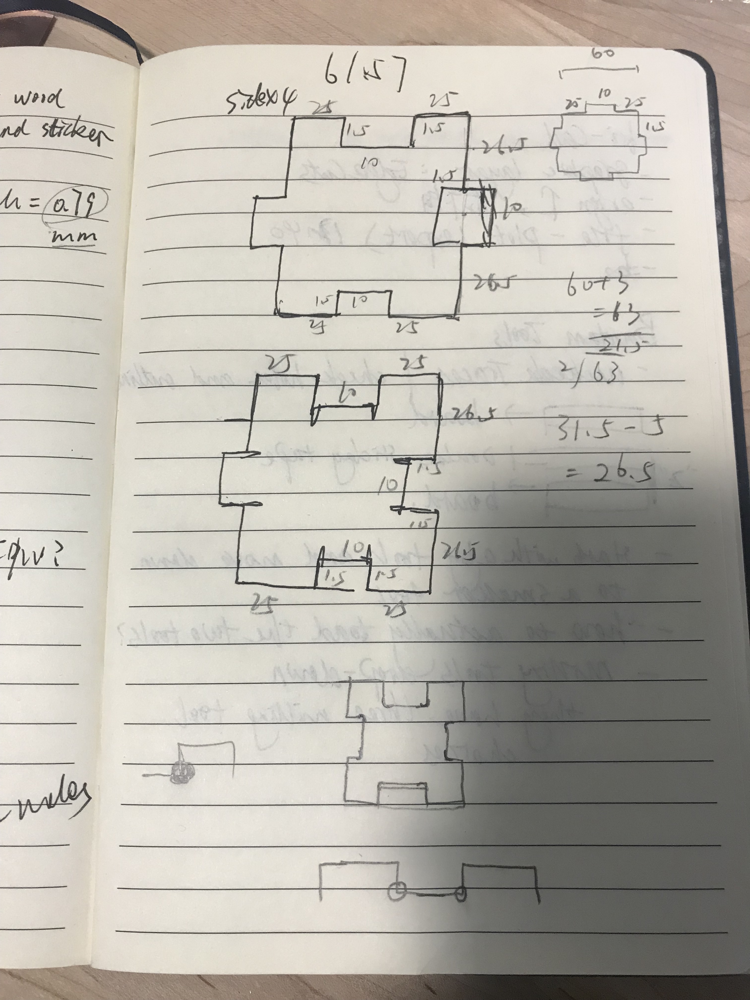
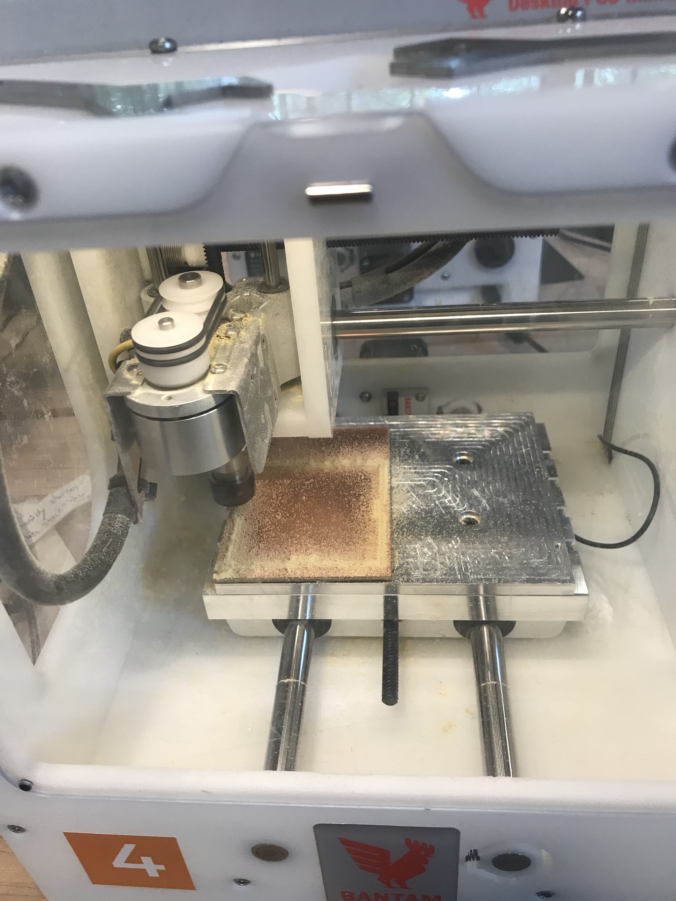
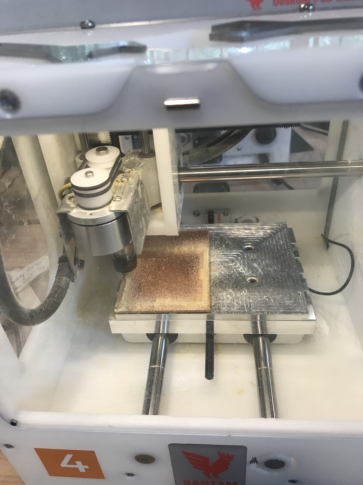

A Box!

Thank you Joshua for answering my questions about Onshape! Thank you Lucas so much for helping me with Onshape and trouble-shoot during milling!!
Ideation
I ideated on my notebook. I decided to try finger joints as they are simple and elegant. Based on the dimensions and thickness of my F1, I created the measurements.

Trials and Errors
With Josh's help, I was able to trouble-shoot problems encountered when using Onshape. I learned to use "mirrow" to quickly create my symmatric shapes. However, I encountered difficulties when using Kicad and Bantam Tools. For Kicad, when importing my files, I forgot to check "Edge Cut", so the document could not be imported to Bantam Tools.

Execution
Finally started to mill! In Bantam Tools, I set the Zoffet to 0.1mm, which was too small, and thus for my first trial the drill cut through both boards. I reset myb settings based on Lucas' suggestion and reset the zoffet to 1.91mm. It worked pretty well! Below is a display of the first success piece I milled!
 

Finally, I cut the six pieces I wanted, and assembled them into a box!